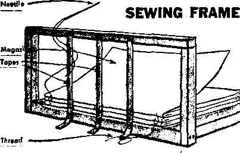
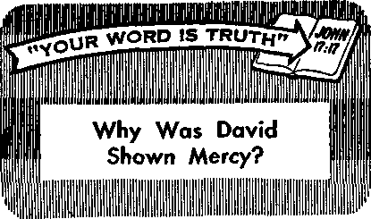

THE REASON FOR THIS MAGAZINE
News sources that ore able to keep you awake to the vital issues of our tim be unfettered by censorship and selfish interests. " Awake!” has no fetters. It rec facts, faces facts, is free to publish facts. It is not bound by political ties; it is pered by traditional creeds. This magazine keeps itself free, that it may speak freely to you. But it does not abuse its freedom. It maintains integrity to truth.
The viewpoint of "Awake!” is not narrow, but is international. "Awake!" has its own correspondents in scores of nations, its articles are read in many lands, in many languages, by millions of persons.
in every issue "Awake!” presents vital topics on which you should be informed. It features penetrating articles on social conditions and offers sound counsel for meeting the problems of everyday life. Current news from every continent passes in quick review. Attention is focused on activities in the fields of government and commerce about which you should know. Straightforward discussions of religious issues alert you to matters'of vital concern. Customs and people in many lands, the marvels of creation, practical sciences and points of human interest are al! embraced in its coverage. "Awake!" provides wholesome, instructive reading for every member of the family.
"Awake!" pledges itself to righteous principles, to exposing hidden foes and subtle dangers, to championing freedom for ail, to comforting mourners and strengthening those disheartened by the failures of a delinquent world, reflecting sure hope for the establishment of God's righteous new order in this generation.
Get acquainted with "Awake!” Keep awake by reading "Awake!"
PUBLIBttKD SUiUlTANEOUBLV TN THt UNTIED STATED BY THE WATCHTOWER BIBLE AND TRACT SOCIETY Of NEW YORK. INC. 117 Adams Street Brooklyn. N.Y. 11201. U.S.A.
ano in Enola nd by WATCH TOWER BIBLE AND TRACT SOCIETY Watch Tower House, The Ridgeway London N.W. 7, England
N. H. Knows, President Grant Surratt, Secretary
Printing this issue; 4,250,000
4d R «jy < Ai st ml la, 56; South Afrlcar3‘/ai)
Yearly subscription rates
Ofleet for wmimonthly editions
England, Watch Tower House,
New Ztttand, 621 New North Rd., Auckland 8,W 1
Soatt Africa, Private Bac 2, P.ft Efcmfcfcttieta, TrJ.
(Monthly editions cost hair the above rates,) BamtttRMU for subscriptions should be sent to the office in your country. Otherwise send your rewltl&nu to Brooklyn. Notice of •xplratftn is sent at least two issues before lubscrlbtlon expires.
Now published in 26 languages Semimonthly—Afrikaans, Cebu-Vlsayan, Danish, Dutch, English, Finnish, French, German, Greek, Uccanc, Italian, Japanese, Korean, Norwegian, Portuguese, Spanish, Swedish, T&galOg, Zulu.
Monthly—"Chinese, Clnyania, HflipLyuon-Vlsayan, Malayalam Polish, Tawil, Ukrainian.
CHANGES OF ADDRESS should reach ■■ thirty day* before ymir mttfino data. Give ua your eld and new address (If passible, year aid address label). Write Wsteh Tower, Whfrh rower tfw, Zto
London N.W, 7, England,
Entered as eocoad'dafis matter at Brooklyn, N.I. printed In England
The Bible trauUtlan rspilaiiy need Ie “Avail I" Ie ths Ne* Werl I Tiwlitlta of the Holy Swlptirei, 19£1 edition. When ether translations are EMd, tbl* Is eleirly markMl,
CONTENTS
The Grand Harmony oi "All Scripture” 5
Catholicism’s Influence in
Should You and Your Children Be Vaccinated?
The Eatable Peel
Bind Those Magazines
“Your Word Is Truth"
Why Was David Shown Mercy?
Watching the World
17
22
iTT’VIL, of course,’ some might answer. Jlj ‘Why, jealousy is widely recognized as one of the most vile of emotions.’ While that can be true, it must be recognized that there is a form of jealousy that is right and proper. A comparison of the two forms will be profitable in determining how correct our emotions are.
We have but to turn to the inspired writings of Moses to find an example of righteous jealousy. The perfect Creator declared: '‘You must not prostrate yourself to another god, because Jehovah, whose name is Jealous, he is a jealous God.” Also, he describes himself as "a God exacting exclusive devotion” from his worshipers. (Ex. 34:14; 20:5) For Jehovah to be jealous about worship, or to exact exclusive devotion, is altogether fitting. He is the only true God; he has a proper claim on all our worship. Nor can any selfish motive be ascribed to God on this account, for it is in the interest of the peace and happiness of all his creatures that they worship their Creator. As the Creator, he knows what is in the highest interest of his creatures.
In line with this, devoted servants of God, such as the prophet Elijah and the apostle Paul, could properly express jealousy over the worship of professed servants of God. (1 Ki. 19:10) To the congregation that he had established in Corinth, which included persons Jehovah had accepted as part of the ‘bride of Christ,’ the apostle Paul wrote: “I am jealous over you with a godly jealousy.” (2 Cor. 11:2) He was not craving their devotion for himself. Rather, because Jesus Christ the Bridegroom has the right to devotion from his Bride, the apostle could express proper concern over the congregation, which he had promised in marriage to the one Husband, Jesus Christ
In contrast to perfect, godly jealousy, imperfect humans often express an emotion called jealousy that is in reality fear of losing something that they have or resentment toward a person who might take away the possession. But, you might ask, is it not human nature to be jealous about the object of one’s love? True, but let us remember that we are dealing with fallen, sinful human nature. Jealousy can act like a corrosive acid that eats away one’s vital organs. It can drive persons to depression, violence and even suicide. Properly this form of jealousy is soundly condemned in the Bible as “earthly, animal, demonic,” a ‘work belonging to darkness,’ which Christians should abandon, (Jas. 3:14-16; Kom. 13:12, 13) In fact, Proverbs 14:30 warns us that “jealousy is rottenness to the bones.”
Human jealousy is often based, not on fact, but on fanciful imagination. For example, a wife might notice that her husband appears to be giving extra attention to another woman who is quite pretty or who is a sparkling conversationalist. While there may be no basis for distrusting her husband, soon seeds of suspicion are found in the wife’s heart, seeds that can grow into the malicious weed of jealousy, destroying her happiness and even her home. Or some husband might notice that his wife seems to enjoy talking with a particular man who has a striking personality or who has many interesting experiences to relate. Unless he controls his emotions, the husband could allow baseless jealousy to increase until he is reduced to a bitter dictator of his wife’s actions. And yet his wife may have been completely faithful to him, having no romantic interest in the other man at all.
Jealousy is even used at times as an unchristian, underhanded tool. As an illustration, a young girl might be interested hf a boy who does not openly return her attention. In order to increase his interest in her, she might dishonestly feign romantic interest in another boy. She hopes to use this third person as a fulcrum on which she will use jealousy as a bar or lever to raise the interest of the first boy toward her. Obviously this subterfuge is wrong, doing emotional harm to innocent persons; but jealousy often destroys right principles.
Of course, within the marriage union exclusive devotion is proper in certain respects. A married individual has the exclusive right to the marital due and the intimate expressions of affection from a marriage mate, mis is a uoa-given ngnt. (Gen. 2:24; 1 Cor. 7:3-5; Heb. 13:4) But this does not mean that married people can have no friends aside from their mates. Balance in appreciating what is proper association will greatly relieve persons who have a tendency to be jealous of their mates.
It is normal and proper to have love for your family and friends, but it has been said that in jealousy there is more self-love than love. When you see a loved one enjoying the company of another person, you should honestly admit to yourself that possibly that person has a personality trait or ability that you do not. Instead of resenting that, more happiness would be produced for all if you would join your mate or loved one in enjoying the knowledge, ability or personality of that other person. If married, you should realize that your mate loves, accepts and needs you, but that does not mean that you are perfect, with all knowledge and abilities. When you learn of things or persons that your mate enjoys, instead of Competing and struggling to be possessive, why not join your mate in that one’s enjoyment? In this way mutual love is built up, and it will also eliminate jealousy. Speaking, of true love, the apostle Paul said: “Love is not jealous, it . . . does not look for its own interests . . . Love never fails.”—1 Cor. 13; 4, 5, 8.
The apostle Paul listed human jealousy as one of the “works of the flesh.” (Gal. 5:19, 20) Appreciating our imperfection, we should resist the human form of this emotion that runs contrary to true love. By being fully concerned about 'godly jealousy’ or jealousy exercised in a way that God does and not getting carried away with base human jealousy, we can enjoy increased peace with God, family and friends.
THE evenings are cool here in the mountains, and the Jones family appreciates the warm fireside as they relax after the day’s activities. John Jones and his wife, Mary, have done well in ,
rearing their a
family accord- />
ing to Bible f A
principles. From Mark,
fl
shimmering, harmoni-r Tlte ous w^ole- It is this
-m Tfs beauty and oneness M ’Mil fl that remind me of the
f r fl Bible. You see, Jeho-
» vah first inspired the writing of the Hebrew ' Scriptures, over vA some eleven hun-dred years. And then on this \\\ framework of \\\ thirty-nine books he later spun the
the oldest son, to daughter Ruth—yes, right down to Thomas, the youngest, they can all hold their own when it comes to answering questions on the Bible.
It is Ruth who brings the conversation around to their previous tropic of discussion. “You know," she says, “I saw something in the field this morning that reminded me of the Bible. You would never guess what it was—a spider’s web!"
“A spider’s web remind you bf the Bible?” asks Mark.
“Yes," continues Ruth, “it looked so beautiful and symmetrical, with dewdrops glistening on all its threads. And then I got to reflecting that Jehovah, the Author of the Bible, is also the Master Designer of that beautiful web. ... You know, I once watched a spider weave its web.”
“Ugh,” says Thomas, “I don’t like spiders. But go on, Ruth.”
“Well, first he spun a framework between the bushes—something that looked like the spokes of a wheel.”
“And then—” prompts Thomas.
“Why, then he spun his way round and round and round, from spoke to spoke, making a beautiful spiral of shiny, sticky thread. But both spokes and spiral made up one twenty-seven books of the Greek Scriptures, a perfect complement to the Hebrew Scriptures that preceded them.”
“That illustrates things very well,” remarks Mary Jones. “First the Hebrew Scriptures, and then the Greek. But how interdependent the two are—in fact, so inseparable that we must always regard them as being one composite whole, the complete, inspired Word of Jehovah God.”
“Very true,” continues her husband, “for it was Jesus who opened up the minds of his disciples ‘fully to grasp the meaning1 of the Hebrew Scriptures; you remember, it’s at Luke 24:45. Then those disciples drew heavily on the Hebrew Scriptures for proof texts and arguments in their writings. That is why we find many parts of the Greek Scriptures hard to understand without a background knowledge of the Hebrew Scriptures.”
“Oh, yes,” says Ruth, “that reminds me of the time I came across ‘Melchizedek’ in Paul’s letter to the Hebrews and had to trace him back to Genesis, chapter 14, and Psalm 110 to find out what it was all about”
Mark breaks in: “And talking of the book of Hebrews, how is it that we have come to understand Paul’s applications here of the Law of Moses, its covenant, the tabernacle, the priesthood, the blood and the mediator?”
Mother replies: "Why, only by studying out the greater part of Exodus, Leviticus, Numbers and Deuteronomy.”
“That’s very true,” says father. “And so we appreciate how well the Greek Scriptures support the Hebrew Scriptures in showing us the fulfillments of the many details. This also helps us to understand Christ Jesus’ office, not only as King, but also as God’s great High Priest in heaven.”
The warm fire has made young Thomas a little drowsy, so father rouses him to read a scripture from his Bible, Hebrews 8:1: “Now as to the things being discussed this is the main point: We have such a high priest as this, and he has sat down at the right hand of the throne of the majesty in the heavens.”
“How do we understand this?" asks John Jones.
Mark is quick to reply: “This is another reference to the Hebrew Scriptures, this time to Psalm 110. I recall reading in the book ‘All Scripture Is Inspired of God and BencficiaV that there are at least five quotations of verse one of this psalm alone in the book of Hebrews. Thomas, you may recall what Psalm 110:1 says.”
To make sure, Thomas locates the text in his Bible and reads it: “The utterance of Jehovah to my Lord is: ‘Sit at my right hand until I place your enemies as a stool for your feet.’ ” “Yes," he adds, “David is here speaking in a prophecy about his Lord, Jesus Christ, in heaven after his resurrection.”
“Well spoken, Thomas,” says Mary, and continues: “It was to these same words that Jesus referred—and here it is, at Luke 20:41-44—when he asked his opposers, ‘How is it they say that the Christ is David’s son?’ If those Jews had compared the Hebrew Scriptures with what they observed in Jesus, they should have been able to answer.”
“And note Peter’s famous speech at Pentecost,” adds Mark. “Here, as recorded in Acts, chapter 2, he makes a number of quotations from the Hebrew Scriptures, and then relies on Psalm 110 for the clinching argument of his talk. He shows that Jesus, now at God’s right hand, has poured out the promised holy spirit. After quoting this psalm, he concludes, at Acts 2:36: ‘Therefore let all the house of Israel know for a certainty that God made him both Lord and Christ, this Jesus whom you impaled.’ ”
John Jones summarizes the matter: “So if we did not have the prophecies of the Hebrew Scriptures, it would be very, very difficult to understand all these passages in the Greek Scriptures. Why, the 110th Psalm alone is quoted by Bible writers Matthew, Mark, Luke, Peter, Paul and John. What an abundant support this is for the Hebrew Scriptures!”
Mother now comments: “I’ve just been looking here at Romans 10:11-21, about the importance of obeying and proclaiming the good news. Look!—three different quotations from Isaiah, and others from Psalms, Joel and Deuteronomy.”
To which Mark adds: “And here at Galatians, chapter 4, about the symbolic drama involving Sarah and Hagar—how could we ever understand the import of Paul’s remarks without reading the background information about these two women at Genesis, chapters 16 to 21?”
“And what about James’ references?” asks Ruth. “In his letter he speaks of the exemplary qualities of Abraham, Rahab, Job and Elijah. To get the full benefit, we really have to study out these Bible characters. And that takes in the Bible books of Genesis, Joshua, Job and First and Second Kings.”
“It’s the same,” continues Mark, “with Jude’s references to Cain, Enoch, Sodom and Gomorrah, Korah and Balaam. Here, also, it’s essential to be familiar with the background information in the Hebrew Scriptures—at Genesis and Numbers.’’
“Then there are the references,” says Ruth, “in Peter’s two letters, to Noah’s day, the angels that sinned, Sarah’s adornment and God’s promise of ‘new heavens and a new earth.’ We truly need Genesis and Isaiah’s prophecy to elucidate these.”
“You children have it ‘down pat,’ ” remarks John Jones. “And since the Greek Scriptures do indeed give all this support to the Hebrew Scriptures, does it not indicate that we too should give careful study to the Hebrew Scriptures, as well as to the Greek? . . . And now let’s review! First, Thomas, what do we call the first five books of the Bible?”
“That is the Pentateuch,” Thomas replies, “and it was written by Moses.”
“Very true,” John Jones remarks, “and what other people of ancient times had anything to compare with the writings of Moses? A dynamic record, indeed—practical, thorough and complete for the needs of the nation of Israel. And it sets out principles that Jesus observed when on earth, and which continue to be an invaluable guide for all Christians till this day.”
“Next,” says Mark, “we have the historical books from Joshua through to Esther. Here we can note how each book builds on the preceding ones in developing the Kingdom theme of the Bible. Truly this is a record that is both inspired and inspiring!”
“And here we must include my favorite, the book of Ruth,” mother adds, “beautiful and meaningful, and essential too in identifying the line of descent to Messiah."
It is Ruth’s turn: “Then there is that superb example of ancient Hebrew poetry —the book of Job. What a clear focus it gives us on the issue of integrity and on God’s sovereignty!”
“And we must not forget all the other ‘writings,’ ” says Mark, “Psalms through to The Song of Solomon. These are inspiring in their admonition and encouragement, and what heights of grandeur they reach in portraying Jehovah’s royal Son, and in giving foreglimpses of his kingdom! No wonder that the book of Psalms, with its emphasis on praise to Jehovah, is most frequently quoted in the Greek Scriptures!"
Young Thomas joins in: “And what about the prophets? Daddy, you have often told us about their courageous acts.”
“That’s right,” says his father. “Just visualize Jeremiah, Isaiah, Micah and the others standing up among wicked rulers and wicked people and fearlessly proclaiming the word of Jehovah. And how enjoyable it is to study the modern-day application of these prophecies!”
“What wonderful forevisions Jehovah provided through them,” adds Mary, “of a new covenant, God’s law written on the hearts of his people, new heavens and a new earth, the Prince of Peace to rule in David's line, beating swords into plowshares ...”
Her husband takes up the theme: “And as we continue into the study of the Christian Greek Scriptures, we note the overwhelming support that they give to all that has gone before. They quote and re-quote, and draw illustration upon illustration from the Hebrew Scriptures. Thus, from beginning to end, both Hebrew and Greek Scriptures make to stand out clearly the glorious, harmonious theme of ‘all Scripture.’ And Thomas, do you remember what that theme is?”
“Yes, Daddy, it is about making God’s name holy through Christ’s kingdom.”
“Very good, my son—the sanctification of Jehovah’s name through the Kingdom of the Seed. And now I think you all understand why I require you to attend tiie Theocratic Ministry School and other congregational meetings each week. There we all learn the things about ‘all Scripture,’ God’s Word, that we need to know. Surely we all rejoice in the spiritual understanding and strong faith that we gain as a result of this.’’
“But look at the time!” mother exclaims. Again it is bedtime. However, all agree that it has been time well spent—around the happifying Word of God.
FOREMOST among the precious freedoms man has today are the freedom of religion and the freedom of speech.
Such freedoms are virtually nonexistent in some lands, and hard won in others. In the United States of America the founding fathers of the nation thought so highly of these freedoms that they incorporated them in the very foundation document of the country, the Constitution, particularly in the first ten amendments.
Part of the First Amendment to the Constitution states this: “Congress shall make no law respecting an establishment of religion, or prohibiting the free exercise thereof; or abridging the freedom of speech,” It was in regard to these two fundamental freedoms, of religion and speech, that cases decided early in 1965 by the United States Supreme Court and by a Superior Court of California stirred great interest.
Freedom of Religion
On March 8, 1965, the Supreme Court announced its decision in a case involving three young men, each of whom claimed exemption from serving in the armed forces of the United States on religious grounds.
Their cases had come up separately in lower courts previously. One of the individuals, Daniel A. Seeger, had been convicted in a federal District Court in the state of New York for having refused to submit to induction into the armed forces. He took his case to a United States Court of Appeals, and won. The court reversed the judgment against him. However, the prosecution then took the case to the United States Supreme Court in an attempt to get the original conviction upheld.
The second case was that of Arno S. Jakobson. He was also convicted in the same District Court in New York for having refused induction into the armed forces. But the Court of Appeals reversed this decision; whereupon, as in ^Seeger’s case, the prosecution took the case to the United States Supreme Court.
The third case involved Forest B. Peter, convicted in a federal District Court in California on the same charge, that of refusing induction into the armed services. In this case, however, a Circuit Court of Appeals affirmed the lower court’s judgment, so Peter took the matter to the United States Supreme Court.
Since these three cases were similar, each involving a claim of conscientious objection to the Universal Military Training and Service Act, they were consolidated by the Supreme Court.
Belief in a "Supreme Being"
The crux of the matter involved interpretation of the draft act’s exemption from combat training and service in the armed forces of persons who, by reason of their religious training and belief, are conscientiously opposed to participation in war in any form.
The three men raised the basic question of the constitutionality of the section of the Act that defines the term “religious training and belief’ to mean “an individual’s belief in a relation to a Supreme Being involving duties superior to those arising from any human relation, but [not including] essentially political, sociological, or philosophical views or a merely personal moral code.” Each claimed that this interpretation ■ was unconstitutional because it discriminated between different forms of religious expression. Each stated he had an individual religious belief, although not connected with any organized religion nor conforming to the orthodox view of a “Supreme Being.”
Seeger declared he was conscientiously opposed to participation in war in any form due to this individual religious belief. He left open the question as to his belief in a Supreme Being, choosing not to answer whether he believed in such a Supreme Being or not. He held that his skepticism in the existence of God did not necessarily mean lack of faith in anything whatsoever. Rather, he stated that his was a “belief in and devotion to goodness and virtue for their own sakes, and a religious faith in a purely ethical creed.”
Jakobson also held to unorthodox views. He defined religion as the “sum and essence of one’s basic attitudes to the fundamental problems of human existence.” He said that he believed in “Godness,” which was “the Ultimate Cause for the fact of the Being of the Universe.”
Peter, too, was not a member of a religious sect or organization. On the question as to his belief in a Supreme Being he said that it depended on the definition. He also* stated that he $elt it a violation of his moral code to take human life and that he considered this belief superior to his obligation to the State. When asked whether this conviction was religious, he quoted with approval a clergyman’s definition of religion as “the consciousness of some power manifest in nature which helps man in the ordering of his life in harmony with its demands . , . [it] is the supreme expression of human nature; it is man thinking his highest, feeling his deepest, and living his best.”
The Circuit Court of Appeals that previously exonerated Seeger had stated: “We cannot conclude that specific religious concepts, even if shared by the overwhelming majority of the country’s organized religions, may be selected so as to discriminate against the holders of equally sincere religious beliefs.... We are convinced that the believer in a Supreme Being is not for that reason alone more entitled to have his conscience respected by a draft board than is Daniel Seeger. In the words of Madison’s historic Remonstrance, . .. ‘religion is too personal, too sacred, too holy, to permit its “unhallowed perversion” by a civil magistrate.’ ”
The same Circuit Court of Appeals reversed Jakobson’s conviction, and it commented: “Under present day thinking as to the First Amendment, a statute could scarcely be defended ... if it protected ‘the free exercise’ of only a few favored religions or preferred some religions over others without reasonable basis for doing so.... The freedom which the Constitution protects is the freedom to exercise the religion of one’s choice; a statute limited to certain religions would restrict the free exercise of the disfavored ones.”
The Circuit Court was very concerned about protecting the freedom of religion guaranteed by the First Amendment to the Constitution of the United States. The judges felt that, even though Seeger and Jakobson did not have orthodox religious views and were not connected with an established religion, it did not mean they were not religious, nor could this be used as grounds to deny them exemption from bearing arms. However, the prosecution disagreed and, in both instances, took the case to the Supreme Court.
Decision of Supreme Court
The cases of Seeger and Jakobson, as well as that of Peter, were together brought before the Supreme Court. On March 8, 1965, the highest court of the land announced its decision, stating: “We have concluded that Congress, in using the expression ‘Supreme Being’ rather than the designation of ‘God,’ was merely clarifying the meaning of religious training and belief so as to embrace all religions and to exclude essentially political, sociological, or philosophical views. We believe that under this construction, the test of belief ‘in a relation to a Supreme Being’ is whether a given belief that is sincere and meaningful occupies a place in the life of its possessor parallel to that filled by the orthodox belief in God of one who clearly qualifies for the exemption. Where such beliefs have parallel positions in the lives of their respective holders we cannot say that one is 'in a relation to a Supreme Being’ and the other is not. We have concluded that the beliefs of the objectors in these cases [Seeger, Jakobson, Peter] meet these criteria.”
The Supreme Court then upheld the Appeals Court in the cases of Seeger and Jakobson and reversed the judgment that had been entered against Peter by another Appeals Court. All three were exonerated and were permitted deferment as conscientious objectors on religious grounds.
Commenting on the Court’s decision, Mr. Justice Douglas said: “I agree with the Court that any person opposed to war on the basis of a sincere belief, which in his life fills the same place as a belief in God fills in the life of an orthodox religionist, is entitled to exemption under the statute.’’
The Supreme Court was not attempting to say that a liberal view of God is better than a fundamentalist view, or that any particular definition is the only valid one. The Court was saying that if a man’s conscience makes a difference in such matters, then he must be taken seriously regardless of the theological source of his convictions. What the Court had to decide here was whether a belief professed by an objector was sincerely held and whether it was, in his own thinking, religious. In the cases of the three individuals in question, the Supreme Court decided they were sincere and religious. The decision took into account the individual conscience and upheld the freedom of the individual to believe according to that conscience.
Freedom of Speech
About the same time a different case involving another basic freedom, this time freedom of speech, arose in the state of California. Here, a youth, Charles Ames, was threatened with expulsion from the Santa Barbara High School because he refused to recite the words of the Pledge of Allegiance. He based his refusal on the ground that to compel him to recite the Pledge of Allegiance violated the First and Fourteenth Amendments to the United States Constitution.
The First Amendment had incorporated in it the freedom of speech, as well as the freedom of religion. But Ames did not, as the court stated, “take the easy way out by declaring his stand based upon the Freedom of Religion.” Had he done so, there probably would have been no case, as this right is already well established. Ames definitely declared that he did not have any religion, as that word is commonly understood, and therefore renounced the protection of the First Amendment’s freedom of religion clause. He described his position as that of an agnostic who does not accept dogma or theology. His stand, then, was based on freedom of speech, as well as conscience. He claimed that under the First Amendment he had the freedom to take the position that he wished to take when the Pledge was recited. In this case he stated that he had the freedom to recite it or not to recite it, and he chose not to recite it.
The case came before the Superior Court in the county of Santa Barbara. On April 30, 1965, the judgment of the court was announced. The presiding judge said: “I must by compulsion of the United States Constitution command the Respondent Board of Education to permit this Petitioner to remain silent and not to compel him to recite the words of the Pledge of Allegiance. I have no other choice.”
The court cited as an example a precedent in the case of United States vs. Barnette, which also involved a pledge of allegiance. The court quoted a portion from the U. S. Supreme Court’s decision in that case. It said, in part: “If there is any fixed star in our constitutional constellation, it is that no official, high or petty, can prescribe what shall be orthodox in politics, nationalism, religion, or other matters of opinion or force citizens to confess by word or act their faith therein. If there are any circumstances which permit an exception, they do not now occur to us. We think the action of the local authorities in compelling the flag salute and pledge transcends constitutional limitations of their power and invades the sphere of intellect and spirit which it is the purpose of the First Amendment to our Constitution to reserve from all official control.”
The Superior Court then decided that Ames’ right to freedom of speech had to be upheld, declaring: “Because some may think him odd, or even sacrilegious is of no moment to this Court We must and we shall stand for his right, his own right to think as he will so long as his way of life resulting from his thoughts do[es] not harm and do[es] not interfere with the beliefs of others. We hold Petitioner has the right to refuse to verbally recite the Pledge, and I base this upon the Constitutional ground, too, of Freedom of Speech, —his right to express himself or speak in a sense is his right to remain silent”
These two cases, the one decided by the Supreme Court and the one decided by the California Superior Court, were welcomed additions to the great legal bulwark protecting basic freedoms of the individual in the United States. These courts are to be commended for their integrity, for their decisions benefit not only the individuals directly involved but many others who may take a like stand in the future.
Freedom of religion and freedom of speech are precious. They are God given, and no individual, whether in high or low station, should deny them to others. It is heartening to see that the high courts of the United States continue to uphold these basic freedoms.
IITH the great number of auto accidents ' that take many thousands of lives yearly, one may not readily think of the auto as a means of saving lives. Yet in some situations your auto can mean survival.
There are times when an auto breaks down in very isolated areas, sometimes at night. In these instances and in many others, such as being marooned in a blizzard, flood or desert, people have kept alive by staying with their car, waiting for help. Usually it is easier for search parties to find a car than an individual wandering about. Yet the first inclination of a marooned person is almost always to set out for help.
"Too often,” says a California highway patrolman of the motorist who thinks only of leaving his car, “he’s beyond help when we find him a couple miles down the road, dead from exhaustion, heat or cold." According to this patrolman, “not one motorist in a hundred sees his car as a survival kit.”
The auto can indeed be a survival kit, for it has almost everything to keep one alive except food. What is required is some imagination. As the leader of a rescue team in the United States put it, one must turn his auto to purpose and “wring from its ton or more of metal, wires and gadgets the essentials of survival.”
How can one survive by staying with his car till help arrives? If there is no snow or water nearby, there is a water reservoir under the hood of many kinds of autos. Depending on the car’s size, the radiator may contain up to twenty-one quarts of water. Here is a thirst-quenching canteen for one marooned in desertlike places. By using the radiator's spigot on the car’s underside, one could get water, providing it has not been contaminated with antifreeze, to last for days. If the water is rusty, it could be filtered with a handkerchief. For a cup, one could unscrew the small bowl or sediment bulb attached to the fuel line. Or one could use one of the car's hubcaps. If digging or shoveling materials are needed, one could use the jack handle, hubcaps, sun visors or the glove-compartment door.
If you wanted to signal for help, how could you use your auto? First, there is the auto’s horn. The car may have a flashlight in the glove compartment or trunk. Or one could j unscrew the rearview mirror and use this as < a reflective signal. One motorist, car broken J down at night, removed a sealed-beam head-i light. Leaving it wired to the battery, he j directed its beam upward in wide, sweeping ? arcs. He and his family were rescued. Still i another way to signal for help is to make ! use of the oil under the car’s hood. By burn; ing a quart of oil in a hubcap, one can send j up a smoke signal high into the sky, visible | for miles around. A little gasoline poured < on top of the oil will help ignite it, but be f careful!
! Rubber tubing or hoses could be used in | several ways, such as a tourniquet to stop ; bleeding. In some cars a hose may be long j enough to be used to siphon out gasoline J from the car’s fuel tank.
J . A little gasoline will help to get a Are ', going. If there is no wood to bum and warm-£ ing is needed, one could do as some stranded ! persons have done—set an auto tire on fire. < The gasoline helps the tire to get burning I and one tire may thus furnish warmth for ! three to four hours. To get gasoline for start-< ing fires, one could open the drain plug on | the bottom of the gasoline tank. Or one could j use a rag or handkerchief tied to a wire and > thrust it into the filler pipe of the gasoline { tank. The gasoline-soaked rag could be used | as a torch to start a fire, but be ready to ( move back quickly when you light it. Suppose ; a stranded motorist had no matches. Some ; motorists overlook the obvious: That their ; car may have a built-in fire starter, a cig-( arette lighter. If the car has no such device, i the dome light's glass cbuld be used to focus I .the sun to start a fire. Or, if the motor runs, i a gas-soaked rag could be ignited by making I sparks from a spark-plug wire.
1 One of the most obvious uses of the car < for survival, of course, is as a place to / sleep or as shelter. In an electrical storm, i few places are as safe as a car with its > rubber-tire insulation. When the car is used 1 as shelter from cold air, there may be slip-t covers, floor mats and rugs that can serve ! as blankets or a means to shut out wind.
i By using imagination while waiting for i help, a stranded motorist can use his auto to withstand the rigors of cold, heat, wind,
i sleet or snow. For in the auto are raw mate-{ rials for family survival.
in
ITALY TODAY
ITALY is one of the many countries that have felt the religious influence of the Roman Catholic Church for centuries. Every well-informed person knows that in the past, particularly during the Middle \ Ages, the Catholic clergy exercised ' great influence over the lives of < Italians, both individually and collectively as a nation.
8y‘'Awake!" correspondent in Italy
But what is the situation today? How much religious influence does the Roman Catholic Church exercise in Italy today? Does she still succeed in dominating the lives of the Italian people as IrTthe past? What is the attitude of Italians in this regard? Do they accept control by the church, or do they reject it?
Church in Crisis
The fact of the matter is that in Italy, called by some “the cradle of Christianity,” the Roman Catholic religion is in deep trouble, losing ground year by year. The situation has approached crisis proportions.
Most Italians generally believe in God and are Catholic because they were baptized, christened and received communion when they were children. But when they see the Catholic church participating in activities of which they disapprove, then many make and follow a personal religion of their own, in which part of the Catholic teaching is accepted and part is discarded. Therefore, it is common to hear people say: “I believe in God but not in the priests,” or, “I go to church to pray when the priest isn’t there.”
This is admitted
■ by Catholic news
papers. La Voce
"" (The Voice), pub..... lished at Temi, on
January 19, 1958, said: “It is useless, ........ in fact, to keep on repeating that 99% of us in Italy are Catholics; sorry to say, useless and substantially false. If we examine these statistics in the light of the catechism, which is what really counts, we find them false. A Catholic is a person who: (1) is baptized; (2) believes ALL the truths taught by the Church, (3) practices a sacramental life, (4) obeys the Church like God. Here । are some facts: about a third of the Italian electorate vote for parties openly and repeatedly condemned by the Church on the religious and moral level. From sufficiently accurate polls we are assured that 31% of Italians never go to mass, 34% are not completely in favor of religious marriages, 45% believe one can be a good Catholic and also a good socialist (follower of Nenni), only 62% are against divorce, only 38% are contrary to abortion. Yes, 99% of the Italian population sure baptized but if we check the other three requirements of true Catholics, a fearful lowering of the percentage is plainly evident”
A poll conducted by the newspaper L’Espresso (The Express') on October 20, 1957, verified these conclusions. To the question, “Are you a practicing Catholic?” only 13 percent answered Yes, whereas 87 percent answered No! Emphasizing the seriousness of the problem, Il Tempo (The Time) of June 19, 1960, affirmed: “Catholicism risks, for the future, being completely excluded from the life and customs of the local population. The undeniable technical-industrial progress of the South ., . has created the dangerous question of survival for the Catholic Church. Nor is this a condition that takes place only in the southern part of the peninsula,”
The situation in the North is even worse. The newspaper Roma (Rome) of February 11, 1962, published the results of investigations made by the Catholic dioceses themselves in various regions of Italy. All the clergy deplored the frightening crisis in the religious condition of the people. The newspaper stated: “People are not what they were once upon a time. They rarely attend the sacraments, participate in religious rites only on holidays, and even the number of these is plainly decreasing. In short, one is brought to ask: ‘Do Italians really believe in God?’ ”
In the northern city of Bologna less than a quarter of its 425,000 inhabitants of the age of reason observed the “religious holiday of obligation” on any one winter Sunday. But even of those that attend Sunday services, Roma observed, “only an appalling 10% . . . can be considered actually ‘faithful.’ ” This paper finally concluded: “We have therefore ascertained, with unchallengeable figures as evidence, that religiousness in Italy is in a continual crisis. . . . It is as if millions of Italians had discovered in themselves the vocation of paganism, of syncretism, or, at any rate, of public disbelief.”
Changing Attitudes
This change is not only one of a careless drifting away from the church, but also involves basic attitudes.
For instance, on certain occasions of the year the priest visits every house in a community in order to “bless” it by means of the sprinkling of “holy water.” In exchange he receives eggs, cheese, money and other gifts. During the period of Fascist rule, when the church reigned supreme, this tradition met practically no opposition.
Now, however, unpleasant controversies take place more often than the priests like if they do not avoid the houses where they are not desired, which are many. Much of the time these controversies are due to political motives, but, in some cases, opposition now arises because of differing religious beliefs. Often the church’s handling of matters results in bad publicity. In one case a farmer in a little town near Rome prevented a priest from blessing his stable and consequently was cited for outrage to the Public Prosecutor! But the publicity resulting from the affair brought great dishonor to the Catholic church. Furthermore, when the clergy appeal to local authorities to vent their intolerance, they lose the sympathy of the majority of the people, who side with the ones being persecuted.
A similar case, the echo of which has not yet died down, is the one regarding the Bellandi couple. These two young persons got married in a civil ceremony, which is the one required by the Italian government. The Catholic bishop of Prato, however, accused them of concubinage. A trial followed, which interested public opinion throughout the entire country. As foreseen, the civil marriage was judged honorable and valid by the State. But what effect did this have on the minds of observers, including many Catholics? L’Es-
presso of April 12,1959, complained: “This maimer of interfering with the private lives of two citizens is uncivilized and deplorable.” '
Communism a Formidable Foe
The rise of a huge Communist party in Italy is one direct result of years of dissatisfaction with the Catholic church. It is today one of the essential reasons for the crisis in the Catholic religion in Italy, for the Communists form one of the most organized and dedicated groups in opposition to the church. In Italy the Communist party has caused millions of believers to be led away from active participation in their traditional religion.
Pope Pius XII tried to stop the growing opposition of the Communists by excommunicating the followers of this party and denying them religious services. The results, however, were not satisfactory. In fact, after the excommunication the number of Communists increased and their aggressiveness became greater!
The following pope, John XXIII, made efforts to draw them close again and exerted a less hostile influence. But not even this attitude made the situation any better. The present pope, Paid VI, outlined in a recent encyclical his desire to define the situation and hold it within its present limits. L’Osservatore Romano (The Roman Observer) of December 6, 1964, said in this regard: “This is the reason that obliges the Holy Father, as it obliged his predecessors, to condemn the ideological systems which deny God and oppress the Church, systems that are often identified with economical, social and political regimes, and among these especially atheistic Communism.”
That the Roman Catholic Church fears “especially atheistic Communism” is understandable when one considers that a future political election in Italy could possibly mean the victory of the parties to the Left, - Including Communists, which would likely mean the losing of privileges now given to the church. For example, at the present time the clergy receive a salary from the State, the patrimony of the church is recognized and her ecclesiastical jurisdiction is guaranteed in the entire territory of the nation. But what would happen if there was a political change of a radical nature, with Leftist forces controlling the government?
Other Manifestations of Animosity
Another manifestation of animosity that underlines the serious crisis plaguing the Catholic church in Italy is the continual repetition of particular news happenings. Criminal acts occurring in places of Catholic worship are becoming more frequent. Sometimes they are even the object of ridicule. Paese Sera (Evening Country) of December 2, 1964, in the article “At Centocelle Thief Repents (but not too much),” announced a theft committed in a parish of Rome. Having noted that the thief had stolen objects from statues of Catholic saints and from an image of the Madonna in the amount of three million lire ($4,840), the article added: “It is noteworthy that the thief had lit a candle in front of the statue of St. Anthony, the only candle that gave light in the church immersed in darkness. Only the one who had committed the theft could have lit it. Did he do it perhaps in order to obtain forgiveness?”
Furthermore, when the pope recently made two trips to other countries, thereby breaking a tradition that had lasted for a long time, it appeared that many of the people of Italy were pleased. It seemed to mark a new conciliatory attitude. But this does not mean that the words of the pope were received without reservation. In fact, upon his return from his trip to Palestine, the newspaper L’Espresso of January 19, 1964, said: “If the words of Paul VI are supposed to be promises of a new course, we shall be the first ones to greet them as a real sign of new times; but they may only be propaganda and in that case it is safer to wait for confirmation by the facts.” And the article concluded: “Honesty requires that one reserve enthusiasm for the accomplished facts more than for the words that simply (and not always clearly) announce them.”
Another event that caused animosity toward the church on the part of believers as well as nonbelievers had to do with “Saint” Filomena. On August 10, 1805, a little box containing the mortal remains of the one who was supposed to be this saint was carried to Mugnano del Cardinale, near Avellino. A sanctuary was built and pilgrims began to flock there. Besides Italy, the cult of this “saint*’ spread to France, Portugal, China, the Indies, the United States of America, Canada and Brazil. A number of articles, and also books, have been written about her, and many miracles have been attributed to her. The existence of this presumed saint had never been questioned.
A few years ago, however, the Catholic church had “an accurate investigation” made. What was the result? It was determined that this “saint” never existed at all! Il Mattino (.The Morning) of April 21, 1961, reported: “The Roman Curia arranged for an accurate investigation. The research was carried out by the Congregation of Rites and brought about the disconcerting conclusion that a saint by the name of Filomena had never existed,”
For opposers of the church, this was the kind of event that could only add to their animosity. But for believers it was stunning, shocking, to realize that for over a century they could have venerated a person who had never existed! It was too much of a shock for some. For others, such as some of the people in Mugnano, the indignation took the form of stating that they would continue the veneration of Filomena regardless of what the church said!
Support Waning
Adding to the difficulties of the church in Italy these past few years has been the economic condition of the people, which has generally improved. The desire for more of the conveniences of life is very strong among Italians. This state of mind increasingly induces people to pursue materialism and thereby takes them away from their religion. The Catholic church continually seeks new expedients in order to try to stem the tide of the falling away. For the young, recreation rooms are opened near the churches. Carnivals and folklore program^ are arranged. But all these nonspiritual1 manifestations and institutions do not have the desired effect Many people take part in them and enjoy themselves as they would in any other club, but they receive no spiritual benefit whatever.
So despite centuries of domination by the Roman Catholic Church over the people of Italy, despite all the traditions, arrangements and organizations designed to perpetuate her empire, the population becomes increasingly indifferent to her. Hqr influence wanes.
There is no doubt about it. The Roman Catholic Church in Italy is deeply in trouble, losing her influence over large segments of the population, and the church has not been able to devise a remedy. This portends the likely loss of even more influence in the immediate future.
IF YOU have children, you most likely have been confronted with the decision as to whether to have them vaccinated. Parents are faced with this decision from when the child is about two months old, at which time doctors customarily recommend vaccination for diphtheria, whooping cough and tetanus. Later, when the child goes to school, vaccination for several other diseases may be insisted on by school authorities. Should you as a parent consent to these vaccinations? Are they really a protection to the child against diseases? Are they without danger? For some parents the decision is not difficult to make, but for others it is, because they have misgivings about the wisdom of vaccinations. The decision must also be faced by persons who want to travel to other lands.
Some persons are convinced that vaccinations are unnecessary and even dangerous, and they firmly refuse vaccinations of any kind. In Great Britain a number of them have banded together into an anti-vaccination league. Many other persons with a special interest in health diets also oppose vaccinations, maintaining that a healthy body does not need vaccinations for fighting diseases. Such opposers of vaccinations have arguments against being vaccinated and those with an opposite view have arguments on why a person should
be vaccinated. The arguments of both sides merit consideration.
The Vaccination Theory
Throughout the ages past, contagious diseases have swept repeatedly through large populations, taking a heavy toll in lives and leaving great numbers of people with damaged bodies. Smallpox, for example, would often kill from 20 to 80 percent of those it struck down. It has been estimated that approximately 60 million Europeans were killed by smallpox during the eighteenth century. How to safeguard the lives people from the ravages of this and other diseases has been a grave medical problem. The answer in the eighteenth century seemed to lie in the findings of Dr. Edward Jenner, who, in 1796, took material from blister-like eruptions on a milkmaid’s hands and inoculated it into an eight-year-old boy. He did this because milkmaids who had contracted cowpox from the cows they milked were untouched by smallpox. A few weeks later he inoculated the boy with pure smallpox material, and the boy did not get smallpox. Why? What appears to be the answer is the reason why doctors want your children to be vaccinated.
Although doctors do not clearly understand what the body does when assaulted by disease-causing organisms, they believe that it produces antibodies that neutralize the harmful organisms called antigens. When it is unable to produce antibodies fast enough, the organisms cause the body to become sick and to produce outward evidence of disease. It is thought that immunity to the foreign organisms comes when the body is able to recognize them and to generate enough of the right type of antibodies to neutralize them. The theory behind vaccinations is based upon these conclusions.
Temporary immunity is generated by injecting into a person a weakened or inactivated microscopic organism, which might be either a very tiny virus that attacks cells or parasitic plants known as bacteria. The resulting antibodies last for a considerable length of time, making the person immune to the disease when he comes in contact with it or at least preventing him from getting a severe case of it.
In some instances, doctors say, a person’s life depends upon his having antibodies in his blood immediately. By the time his body identifies the foreign organism and then manufactures the right antibodies, it is too late. This is the case, for example, with botulism food poisoning. The organism causing this disease gives off the most poisonous substance known to man. A quick injection of a serum, called an antitoxin, immediately gives a person antibodies against this poison. This is said to give him protection for a few weeks or a few months. Vaccines act differently. They do not provide ready-made antibodies but stimulate the body to produce its own. Consequently the protection they give lasts much longer.
How Prepared
In the preparation of antibodies for a serum the blood of horses usually is used A horse is given successive doses of a disease-causing organism, called a toxin. In the case of tetanus, for example, a horse is given small, but increasingly larger, doses of toxin until it is hyperimmunized. This process takes from six to nine months. The antibodies, which are chemical compounds, are removed from the horse’s blood and bottled as a serum. This is what is injected into you when you are given a serum.
Gamma globulin is an antitoxin, that is, a serum, and it is obtained from pooled human blood taken from persons who have built up antibodies against certain diseases. The substance consists of one of several chemical compounds found in the blood plasma of such persons. When injected into a person, it provides passive immunity for only a short time, possibly up to five weeks.
The fact that serums are prepared from blood makes them undesirable to Christians because of the Biblical law against the use of blood. However, since they do not involve the using of blood as a food to nourish the body, which the Bible directly forbids, their use is a matter that must be decided by each person according to his conscience. Vaccines, on the other hand, do not involve blood in their preparation.
The organisms used in a vaccine are not identical with those that cause the disease for which the vaccine is made. In some instances they have been inactivated with chemicals or ultraviolet light. The Salk poliomyelitis vaccine is of this type as well as the vaccines for typhoid fever, rabies, cholera and measles, to mention a few. The inactivated organisms cannot, usually, cause the disease, but they can stimulate the body to produce antibodies against it. The inability of this type of vaccine to give protection for a great length of time without repeated booster shots is its chief disadvantage.
A live .vaccine, such as the Sabin poliomyelitis vaccine, contains nonvirulent organisms that a person’s body can, in most cases, overcome, and in so doing it builds up an immunity to the disease, which immunity lasts for a very long time. There is great difficulty in producing a satisfactory live vaccine, because a strain of the diseasecausing organism must be found that is sufficiently altered from the original that It will not cause the disease and yet will stimulate the body to produce antibodies.
Yellow-fever vaccine, which you are required to take if you travel to certain Asian countries, contains an attenuated or weakened virus that was obtained by passing the yellow-fever organism through several hosts: the monkey, the mouse and, finally, fertilized chicken eggs. The changed organism that resulted from this procedure is now grown commercially in eggs for making the vaccine. The smallpox vaccine, which so often is administered to travelers, is made from a virus of cowpox that is grown in chicken eggs. Cholera vaccine, also required for travel to certain areas of the world, is a bacterial vaccine cultured in an artificial laboratory medium. Most of the bacterial vaccines are prepared on artificial material, which means they are free from blood.
Risks
Notwithstanding the great effort made by researchers to render vaccines safe, their use involves a certain amount of risk. Reactions can be caused that, in some instances, are very serious, such as extreme brain damage and even death. Opponents of vaccination single out these facts as some of the reasons why they object to vaccinations. The National AntiVaccination League in Great Britain points out that more people die from smallpox vaccinations in Great Britain than from smallpox itself. In Germany 115 deaths have resulted from 32 million vaccinations.
Another reason for opposition to vaccinations is the dislike of having one’s body contaminated with foreign organisms, which, in some instances, actually cause a person to get the disease against which the vaccine is supposed to protect him. The polio vaccines, for instance, were found to be responsible for some cases of polio. Vaccinations are, therefore, not necessarily harmless but involve a definite risk that some people prefer not to take.
Confirming the danger vaccinations present, especially for infants, Professor George Dick, head of the microbiology department at the Queens University in Belfast, warned that at least twenty babies a year would die if the British government insisted that all babies be vaccinated for smallpox. He pointed out: “In order to obtain a highly immune''popula-tion, repeated vaccination of nearly everyone at least six times during life would be required. If this is what we want, then we must be prepared to sacrifice at least 30 individuals a year and, in addition, produce about 30 neurological or psychiatric cripples who have survived their postvaccinia] encephalitis,” which is inflammation of the brain.
The risk of bad reactions is much greater with serums than with vaccines. This is due to the fact that serums usually are made from horse blood and thus contain protein matter that is foreign to humans. Because of this, serum sickness is often experienced after an injection. Hives, fever, swollen joints, asthma, vascular collapse or other reactions may become evident. Death occurs sometimes when persons who have received an injection of horse serum, and have become sensitive to it, are given another injection of it at some later time.
Use of a serum can often be avoided by being inoculated with a vaccine well in advance of trouble. An injection with a tetanus vaccine, for example, gives a person protection from the danger of the lethal poison of tetanus organisms, should he receive a wound from something that has tetanus spores on it. A vaccination for tetanus could \ mean that tetanus serum would be unnecessary. This is a factor a person might want to consider since tetanus serum presents a greater risk of bad side effects than the vaccine and also is produced from blood.
In view of the hazards accompanying vaccinations, persons opposing them should be given the right to decline to take the risk of those hazards. Some public officials have shown a disregard for these hazards, possibly because of not being aware of them, and have tried to compel people to be vaccinated. Parents often are confronted with such officials in public schools, who may refuse to let unvaccinated children stay in school. When such officials adamantly refuse to respect their right to refuse vaccinations for their children, the parents must decide whether to let their children be vaccinated so as to remain in school or to find some other way to get them educated. The issue for such persons is not a religious one but one of health risks.
The view held by persons believing that a healthy body does not need vaccinations was presented by Prevention magazine of October 1958. It stated: “A basic element in the case against artificial immunization is this: just as outward sanitation has helped rid us of some basic causes of diphtheria, so internal cleanliness of the child’s system would surely take care of the rest of the problem. A clean and healthy bloodstream, achieved by a good diet of unrefined foods, healthful exercise and use of food supplements has a high immunity of its own to all infections. There is no need then to inject a new immunizing factor to combat each contagious disease, for the body will manufacture its own as the need to defend itself arises.”
Are They Necessary?
There can be little doubt that vaccinations appear to have caused a marked decrease in the number of people contracting certain contagious diseases. During the first thirty years of this century there were thousands of smallpox cases in the United States. From 1920 to 1930 alone, they ran from 30,000 to 100,000 annually, but in recent years there have been only about 55 cases of smallpox annually, with no deaths. Vaccinations also appear to have caused a decline in polio.
Strange as it may seem, epidemic poliomyelitis seems to be a disease peculiar to this sanitary twentieth century. As late as 1887, it was unknown; and in places where the standards of hygiene are low it does not seem to be present. An explanation for this might be in what opponents of vaccination say. Prevention magazine of June 1964 mentions that a polio epidemic in one locality was stopped when the children there were put on a diet that eliminated refined sweets such as ice cream, soda, candy and pastry that caused a lowering of their blood sugar. Such things are not eaten to any great extent where standards of living are low.
The highest incidence of polio in the United States was in 1952, when there were 57,879 cases of it. After that the Salk polio vaccine began to be used. Since then polio cases have dropped precipitously. In 1957 they had fallen to 5,000, and for the years 1961 and 1962 there were fewer than 1,000 cases.
Programs of mass inoculations have apparently just about stamped out certain contagious diseases that used to do a great amount of damage. This fact convinces many people that vaccinations are necessary. But some doctors question the wisdom of carrying on a mass inoculation program against a disease that' is practically nonexistent or at least is under ‘control, in view of the many deaths or lifelong injuries caused by vaccinations. The magazine Clinical Pediatrics, of July 1964, pointed out that some medical men have suggested that mass vaccination programs for smallpox be instituted only when a threat to public health appears. At such times there would be vaccination casualties, to be sure, but not as many as would accumulate over the years from a continuous vaccination program.
Other Approaches
Vaccination is only one of several approaches in the fight against diseases. Much can be said in favor of proper diet and exercise for building up a healthy body that can combat the attacks of diseasecausing organisms. What a person puts into his body to nourish it is certain to affect its ability to cope with foreign organisms. In line with this view is a recent discovery.
It has been found that cells produce a substance that stops viruses of all kinds. It makes its appearance .as soon as a cell is invaded by a virus and has been called ‘'interferon.” Regarding it, Harrier’s magazine of May 1964 said: “Against the nucleic acid of the virus . .. the invaded cell generates a substance that blocks the reproduction of the virus and stops the infection. Unlike antibodies which act outside the cells, this substance goes to work right inside the infected cell.”
Still another discovery is a group of chemical compounds called “pacifarins,” which enable the bodj of a mouse to make an adjustment to disease-causing bacteria so that the bacteria live peacefully with the mouse, as many other bacteria already do. This is a different approach from, that of immunology, which functions on the theory that a war must be carried on with certain microscopic organisms instead of aiding the body to live peacefully with them.
There is much that man has yet to learn about how the human body copes with invading bacteria and viruses. From what he has learned thus far, it is clearly evident that the body was designed to exist safely in a world that teems with microscopic organisms. When it functioned perfectly in the beginning, there was no problem with contagious diseases, but now that we are far removed from that day, our imperfectly functioning bodies oftentimes have difficulty in keeping these small organisms under control. Obviously increasing that difficulty are diets that fail to give the body all the substances with which it needs to work. The accumulation of detrimental chemical substances in the body also affect its smooth operation.
The question as to whether you and your children should be vaccinated is something for personal decision. You must decide on the basis of what you feel is the best course for the health of your children as well as for your own health. No one should be criticized for his decision. In view of the many risks involved with vaccinations, the course of wisdom seems to be one of caution.
By '‘Awokef” correspondent in Puerto Rico
OU probably have eaten it in a moist fruitcake; or perhaps it has flavored some medicine you took that otherwise would have been unpleasant to swallow. What Is it? It belongs to the lime and lemon family; it is that remarkable fruit, the citron. Though similar to other citrus fruits, it has one big difference: It cannot be peeled!
Come with me now to a brining plant to see how the citron is prepared before it is devoured as tasty candied cubes in delicious cakes and confections.
As we follow the narrow, winding road Just a few kilometers out of the mountain town of Adjuntas, Puerto Rico, you probably are still wondering why a citron cannot be peeled like an orange. Now that we are arriving at this small brining plant, you will see for yourself. These piles of citron are brought from the mountainous orchards. Pick one up for yourself and you will see that, although it appears much like an oblong grapefruit, it is much heavier. This is because the citron is almost all peeling! The juicy segments of pulp are small in comparison to the peeling. For example, a citron that is four or five inches in diameter has only about one and a half inches of pulp; the rest is white peel. So now you see why it would be almost impossible to peel it.
A friendly native, Sefior Trabajador, who has worked here for years is willing to explain the steps involved to prepare the citron. First, we are all encouraged to pronounce the Spanish word for citron, cidra. He explains that the word is confused with sidra, which is pronounced the same but which is apple cider. But right now the cidra is being dumped into these huge cement vats of saltwater. The nicely shaped fruits about ten inches long, weighing about one and a half pounds, will remain soaking from thirty to forty days. This is the brining of the fruit, done mainly to preserve it. During this time bacteria develop and make the fruit spongy; also the flavor beads of the outer rind expand and the citrus acidy flavor of the pulp permeates the thick peel.
Now let us suppose that thirty or more days have passed and the citron is ready to be removed from the brining water. But now Sefior Duefio offers to continue the explanation. The fruit is cut in half lengthwise; and this special cutting machine is designed to cut each citron in half and remove the center sections of seeds and pulp. You will notice that the citron has become somewhat transparent and rubbery. Sometimes the halves are shipped as they are, or they are diced in half inch cubes. The fruit is now packed in large wooden barrels with water, salt and alum to preserve the solidness, and copper sulphate to turn the peel an appealing color of light green. With the sealing of the wooden barrels, the fruit is ready for its journey to be candied and used.
Most citron will be candied and mixed with proper portions of lemon, grapefruit, cherries and papaya for use in cakes and confections. But some citron is used for flavoring cooling drinks, as well as liquors and medicines.
Citron has been around for a long time. Archaeologists trace citron seeds to old Nippur sites in southern Babylonia and even to reliefs on the tombs of the Pharaohs of Egypt. Hebrews, Persians and Greeks all became acquainted with the citron; and it became traditionally used in the Jewish feast of the tabernacles or booths. Jewish tradition holds that the “fruit of splendid trees” of Leviticus 23:40 to be used in the festival of booths is the Etrog citron. Jews support this tradition by referring to the words of the Jewish historian Josephus, who wrote: "On this Festival we carry in our hands a branch of myrtle, and willow, and a bough of the palm-tree, with the addition of the citron.”
So the unusual citron has had a long and varied history. And like other splendid fruits the Creator has given man, it is being put to many uses. Perhaps you will most often recognize it in cakes and confections, as those flavorful cubes from the fruit that is almost all peel.
BIND THOSE MAGAZINES
HAVE you ever read the greater portion of a magazine article, only to find the most interesting part missing? Have you searched through piles of magazines looking for a certain subject you remember having read, and discovered that, while other issues were there, the one you needed was missing? Doubtless you have had such disheartening experiences, but are they all in the past? For instance, two or three years from now, where will you be able to find this issue of Awake!? Will it be in a pile of tattered magazines? Will it be the one that is missing when you want it? Or will it be in an attractively bound volume?1
A great part of having knowledge lies in knowing where to find information, but how can valuable information printed in magazines be kept in such a way as to make it readily available?
Bind It!
The purpose of binding is to cover or protect publications, such as magazines of lasting value, for future use. If you have, in your library, magazines that you would like tb have bound, there are two ways to get the job done: (1) Have the work done at some local general-job bindery or (2) make a pleasant hobby of binding them yourself. If you choose the first solution, the magazines for each volume should be put in order, tied together and labeled with your name, the color of the cover and the title to be em
bossed on the cover. While some commercial binderies bind only new books directly from printeries, you probably will be able to find a local bindery that specializes in doing personal rebinding for individuals or libraries. But if you should choose the second solution, binding them yourself, you can look forward to an interesting and satisfying experience. Manuals describing several methods -of binding are available in some libraries, but the basic steps are quite simple to follow. What equipment will you need to do the binding yourself? Basically, the following: scissors, hammer, awl or sharp nail, darning needle, sewing frame (which you can make), and vise or press (which you can also make). Before you begin, though, it would be helpful to find some old book that is soon to be discarded and carefully take it apart, especially examining the endsheets or flyleaf papers, the construction of the cover and the shape of the back or spine of the book. Then start on your own binding job.
Sewing Frame and Press
Why not start by making the sewing frame? A simple frame of the general shape shown on the next page is all that is needed. To bind magazines the size of Awake! a board twelve inches square with two uprights and a crossbar six inches above the board will do.
If you have a vise available, all you need for the press are two hardwood boards or pieces of heavy plywood slightly larger than the magazines to be bound. However,
if you do not have a vise, you can make a satisfactory press quite easily. For this you need two boards about two inches longer and two inches wider than the magazines. Bore a quarter-inch hole near each corner, three-quarters of an inch from the ends and edges of the boards. You can use these boards as a press by placing the magazines between them and tightening bolts inserted through the matching holes. Notice the illustration on page 25. glue the length of the magazine near the fold. Then place one of the endsheets over this magazine so that the fold on it matches the fold on the magazine. The other endsheet is similarly attached to the back of the last issue.
When the endsheets are dry, you should arrange the magazines so that the back and top edges are all even, and then mark eight lines across the back of the magazines so holes can be punched in exactly the same spots in each issue. If the top and back edges - are not kept even or the holes are not ' in the same place on each magazine, the appearance of the finished volume will suffer. Sample dimensions for holes in a magazine the size of Awake! are given in the sewing illustration. You can use the awl or a sharp nail to punch eight small holes in the center fold of each issue, making sure that the holes go all the way through the center page. You are now ready to begin sewing.
Tack three narrow cloth tapes (such as dressmaker’s twill tape or thin, flat shoelaces) on the sewing frame tightly between the crossbar and bottom board so they
Sewing the Magazines
In preparation for sewing, remove the metal staples from the magazines, being careful not to tear out the paper between the holes. If the magazines are fluffy, you can stack them under a weight or in the press for a week; this will reduce the thickness of the finished volume. Arrange the individual copies in the order desired for binding.
will correspond to the space between the
It is now time for you to make the endsheets. Fold two large pieces of heavy kraft wrapping paper in half, and trim them to the exact size of the magazines. On the front of the first magazine, run a one-quarter-inch strip of adhesive or holes in the magazines. This is illustrated on the sewing frame. Leave an extra two inches of each tape below the board.
There are a number of sewing methods that could be used, but we will explain just one of those that produce a strong book. Lay the first magazine on the sewing frame. Working from the right side, pass a darning needle with heavy thread into the first hole, out the second hole, around the first tape, into the third hole, and so forth. Notice this in the sewing illustration. After completing the last hole in that magazine, it is time to put down the second issue. This time you work from left to right. Pull the thread snugly enough to hold each succeeding magazine compactly to the one before it. Notice in the sewing illustration how the threads are linked on the ends and in the center. While it is important to have the magazines tightly sewn together, be careful that you do not tear the paper. When you have completed the last issue, tie the ends of the thread to some nearby loop so the book will stay together. The tapes may now be cut, leaving about two
inches of each tape hanging on each side.
Rounding the Back
Being sure that the magazines are even on the top and back edges, lightly compress them between the boards of the vise or press. Apply a thin coat of flexible adhesive to the spine. (A flexible hide glue that must be heated or a general-purpose adhesive that does not become brittle when it dries should be used.) At this point you can consider the edges of the volume. If you would like to have them all smooth, you may be able to have the volume trimmed at a local bindery. But if you kept the top edge perfectly even while sewing, you may not need to have the volume trimmed. Some books are trimmed only on the top edge anyway.
The next step is to form the round on the book. Lay the volume on some flat surface and, using your thumb on the front edge, form the spine into a slight convex roll. You may even need to tap the back edges lightly with a hammer. Retaining this roll, put the volume back in the press. Make sure that it is tight and that the spine protrudes about one-eighth of an inch. Examine the shape of the spine in the press illustration. By lightly striking glancing blows with a hammer, carefully working from the center of the spine toward the side edges, slowly bend over the outside edges. This should be done slowly and with great care.
Next, cut a piece of cheesecloth, or some similar open-mesh cloth, three inches wider and one inch shorter than the^spine. Also, cut a piece of paper, such as from a paper bag, the same length as the cloth but only as wide as the rounded spine. Next, coat the spine with flexible adhesive and center the cloth, making sure it sticks to the entire back. Then cover this with the brOwn paper and rub it until it is firmly in place. The book will have to remain in the press until the glue is dry. Later, you should cut the tapes to the length of the overhanging cloth and fray the ends of the tapes so they will lie flat and not produce bumps under the endsheets.
The Cover
Finally we arrive at the making of the cover. Proceed cautiously with this step, since much of your success or failure with the finished volume will depend on how carefully and correctly you make the cover. You may even want to experiment with a sample cover. By doing so, you will learn much that will improve the quality and appearance of the finished volume.
The first parts of the cover to prepare are two cards of flat cardboard stock about one-sixteenth to one-eighth of an inch thick. Some stationery stores sell gray card stock, and large pads of paper are often backed with a card stock that might be thick enough. If it is not possible to obtain stock of sufficient thickness, two pieces can be pasted together and allowed to dry under pressure so they do not warp. Cut the cards one-quarter inch longer than the height of the volume. To deter-mine the correct width, carefully mea-sure the distance from the front lip on the round to the front edge of the volume. The cards should be one-eighth inch wider than this measurement. Thus they will rest against the projecting lips and extend one-eighth inch over the remaining three sides.
The backbone strip can be cut from a thinner cardboard, such as the sides of a cereal box. This flexible strip should be the exact height of the cards just cut for the cover, and the width of the rounded spine. Once the two cards are pasted to the cover material, the backstrip will be centered between them, leaving equal hinge space on both sides of the strip.
The cover material itself can be any suitable cloth, such as book cloth, denim or light canvas. To find the size needed, temporarily put the side cards in place on the book, wrap the cover material around the volume and mark on it the edges of the cards. It should be cut to provide an overlap of five-eighths of an inch on each side. Evenly coat one side of the cards with adhesive and position them as marked on the cover material, making sure that the edges are In line with each other. After you cut off the corners as illustrated, paste down the overlapping edges and tuck in the corners. (You may want to practice making corners with the material dry before you apply adhesive to the overlapping edges.) The cover should be put under pressure until it is dry.
While the cover is still flat you can put the title on it. There are a number of ways this can be done, such as having the title embossed on it in gold at some bindery or lettering it with paint or ink. To complete the book, first check to see that the cover fits, allowing a lip of about oneeighth of an inch all around the book. Apply an even coat of adhesive to the two endsheets. Be sure that the cloth and tapes are completely pasted down on the endsheets and covered with adhesive so they will stick to the cover. It may help if you place a piece of paper between the endsheets so that no adhesive gets on the pages. Now you can insert the volume in the cover, taking care to see that it is in square and that the endsheets lie flat. Replace the volume between the pressing boards up to the rounded lip and firmly compress it The volume will need about a day to dry.
If you are a parent and would like to do more things together with your children, you might try this sometime. Some who started binding magazines as a hobby found that they developed sufficient skill to turn it into a profitable part-time job that allowed them spare time to do other things. So the next time you have a group of magazines that you would like to save for future reference, why not bind them?
AMONG the incidents recorded in the Bible that have caused questions to be raised by both nonbelievers and believers is that of David’s great sin of taking another man’s wife, Bath-sheba. They find it difficult to reconcile it with Jehovah’s statement at the time he chose young David that David was a man ‘agreeable to God’s heart/ as well as with the record made by David of zeal for Jehovah’s worship. What is here said by way of explanation is not to justify David in any sense of the word but merely to reconcile the fact of his sin with what else the Bible has to say about him.—1 Sam. 13:14.
Even as a young man David was remarkable, to say the least. He was reported to King Saul as being a skilled musician, a valiant mighty man of war, an intelligent speaker, a well-informed man and, most important of all, it was reported that “Jehovah is with him.’’ What a recommendation!—1 Sam. 16:18.
No question about King David’s leading an aictive and strenuous life. His extending the boundaries of his country to their God-ordained limits must have involved no little warfare. But when once he ‘took it easy/ as the saying goes, he got into difficulty; he stayed home when he should have been at the head of his armies, even as we read: “It came about at the return of the year, at the time that kings sally forth, that David proceeded to send Joab and his servants with him and all Israel,” while David kept “dwelling in Jerusalem." Here, likely, was the initial yielding to the flesh, to creature comfort, that was to lead to such disastrous consequences.—2 Sam. 11:1.
David had much power as a monarch, and so was used to having his own way in matters, and this no doubt made it easier to succumb to the temptation to take Bath-sheba; also, he had a number of wives and so was accustomed to intimacies with more than one woman. No doubt these factors contributed to David’s succumbing to temptation.—Deut. 17:14-20; 2 Sam. 11:2-5.
When David learned that Bath-sheba was pregnant due to his having had relations with her, he tried to cover up the matter by having her husband return from the battle lines to enjoy his wife. But scrupulous Uriah refused to violate God’s law regarding sanctity of warfare. (Deut. 23:9, 10) Now what to do? Clearly Bathsheba was in danger. The only way to cover up their sin would be by freeing Bath-sheba to marry him. So David gave instructions that caused her husband to die in battle. Upon her becoming a widow David accepted the obligation of the child about to be born by taking her as wife. He may well have complimented himself on that narrow escape, but God had taken note of all that had happened.—2 Sam. 11: 8-17, 27.
Thus David broke commandment after commandment, against coveting, stealing, adultery and murder. One sin led to another, like the burglar who kills when he is surprised. Why was David shown mercy?
First of all, because of his sincere repentance. When brought face to face with his sin by the prophet Nathan, he humbly confessed: “I have sinned against Jehovah.” Because of his sincerely repenting, the prophet Nathan told him: “Jehovah, in turn, does let your sin pass by. You will not die.” The sincerity or ms repentance is also seen in the psalm he composed on the subject, Psalm 51, as well as in the fact, let it be noted, that he never was involved in adultery again. —2 Sam. 12:13.
Further, David had built up a record of merit with God. What nobility he had shown toward Saul, whom he could have killed on two occasions, and who was trying to kill him! (1 Sam. 24:1-15; 26:1-16) Besides, what exploits of faith he had to his credit and what zeal he manifested for Jehovah’s pure worship as seen in his desire to build a tem-ple for Jehovah!
—Matt. 6:20.
Then again, God showed David mercy because he was born in sin, having inherited sinful tendencies. As David later said about the matter: “Look! With error I was brought forth with birth pains, and in sin my mother conceived me.”—Ps. 51:5.
In particular was David shown mercy because of the covenant God had made with him for the kingdom. In it, among other things, God stated concerning those who would rule in that dynasty: “When he does wrong, I will also reprove him with the rod of men ... As for my loving-kindness, it will not depart from him the way I removed it from Saul.” In the light of these circumstances it can be seen why David succumbed to this sin and why God showed him mercy.—2 Sam. 7:14, 15.
But let no one overlook the fact that David did not go scot-free. Because of his sin God, through his prophet Nathan, pronounced a terrible-ipunishment upon him, which David experienced to the full: “Now a sword will not depart from your own nouse co ume inuenmre, as a consequence of the fact that you despised me so that you took the wife of Uriah the Hittite to become your wife. This is what Jehovah has said, ‘Here I am raising up against you calamity out of'your own house; and I will take your wives under your own eyes and give them to your fellow man, and he will certainly lie down with your wives under the eyes of this sun . . . also the son himself, just born to you, will positively die.’ ” What suffering, too, David must have endured as his sin became common knowledge and he began to suffer the punishment foretold! He may well have thought that death would have been easier,—2 Sam.
ARTICLES IN THE NEXT ISSUE Where Can a Sense of Security
Be Found?
The Housing Problem.
Prescriptions, the Law and You.
The Korean Art of Writinn.
14.
Truly, when we examine all the facts and implications, we can well understand how it was possible for King David, who had been faithful tn other matters, to be overtaken by such a heinous sin and why God showed him mercy although not without severe punishment David’s great sin is a wholesome warning to all servants of Jehovah God not to feel self-confident but to remember: “Let him that thinks he is standing beware that he does not fall.” (1 Cor. 10:12) However, it is also a source of comfort to those overtaken in a serious fault that, if truly repentant, they can appeal to God for mercy, even as King David was permitted to do, and, if their heart and record are good, they will be shown mercy.
And not to be overlooked is the great witness that the recording of this incident gives to the honesty and candor of Bible historians. Nathan and Gad did not shrink from recording this incident, even though they loved and respected their king.
Witnesses Assemble
<$> The series of ‘‘Word of Truth” Assemblies of J eho-vah's witnesses that got under way June 9 to 13 in Dublin, Eire, and Edinburgh, Scotland, continued during the following weeks in cities of Europe and the United States. From June 17 to 20 thousands of delegates gathered in Oslo, Norway, with the attendance reaching 12,332. The following week Helsinki, Finland, was the host city, and 17,088 were present. That same week the series of “Word of Truth” Assemblies opened in the United States in Seattle, Washington, where a capacity crowd of 15,-575 gathered on the final day. From June 30 to July 4 a fine assembly was held in Rotterdam, the Netherlands, and a peak attendance of 21,-816 was reached. The following week European assemblies were held in Luxembourg, Luxembourg, where 3,835 were in attendance, and Charleroi, Belgium, where 11,710 assembled. From Seattle the assemblies In the United States moved down to California, where 15,802 met in Sacramento and 31,537 in San Diego. For the United States the series of assemblies will conclude with a huge gathering at Yankee Stadium in New York City August 24 to 29. You will greatly benefit if you can be in attendance.
Blessing Wars
& It is a sad day when a political leader has to advise churchmen as to their responsibility. But on June 7, leader of the New Democratic Party of Canada, T. C. Douglas, urged church leaders not to bless wars, because modern wars represent social suicide. Douglas told about 900 delegates to a Baptist convention of Ontario and Quebec, Canada, that even a holy war on communism should not be condoned. "Communism is an idea," he said, and “you can’t kill an idea with a gun.”
End of a Violent Life
<$> During seven years of criminal activity the notorious Colombian bandit twenty-nine-year-old Efrain Gonzalez, is reported to have killed 233' persons, wounded 91 and kidnapped three. Finally, in June, a force of 425 soldiers surrounded his suburban Bogota hideout and shot him. In his pockets at the time of his death were found a scapula ry, a crucifix, several images of the virgin and a rose-colored cloth shield with the inscription, “Stop! The heart of Jesus is with me.” Apparently Gonzalez was very religious.
Water Shortage
4- New York City and surrounding areas are faced with a serious water shortage. By the first week of July the city’s reservoirs were at about 50-percent capacity, compared with the normal 95 percent. Restrictions forbid watering lawns, washing cars and even for restaurants to serve water unless specifically asked for by customers.
Dangerous Glue
<& This spring when some dry glue containing blood dropped from a truck near Salem, Oregon, and scattered along the highway, it was a matter of real concern. Why? Because blood, unless sterilized, can spread foot-and-mouth disease and rinderpest or African swine fever. Therefore, to ensure against the possibility that the blood in the glue was Contaminated, the State Highway Department brought out its big burner and scorched the area. Glenn B. Rea, state veterinarian with the Oregon Department of Agriculture, stressed the extreme danger of handling the blood of animals infected with certain infectious diseases.
Smoking Peril
Speaking at the 61st annual meeting of the National Tuberculosis Association in Chicago, Dr. Luther L. Terry, United States Surgeon General, said: “Studies of mortality ratio? of smokers and non-smokers indicate that 240,000 men will die prematurely this year from diseases associated with cigarette smoking." He explained.* "About 138,000 of these deaths ■will be from diseases clearly and definitely associated with smoking, such as cancer of the lung, larynx, oral cavity, esophagus, and bladder, as well as bronchitis, emphysema and coronary heart disease. Another 102,000 premature deaths will result from diseases where the relationship to cigarette smoking, while not obvious, is nevertheless clearly indicated.”
Biggest Earnings
The American Telephone and Telegraph Company achieved the highest earnings ever reported by any company in a twelve-month period. In the year ending May 31 its net income reached $1,763,441,000, to top the General Motors Corporation earnings of $1,734,781,555 achieved in the 1964 calendar year.
New York City Crime
& In 1964 New York City crime increased in every category; including murder, up from 549 in 1963 to 637 last year, rape, which rose from 1,277 to 1,504, and felonious assaults, which climbed from 13,025 to 14,831. A total of 150,690 felonies were reported* in the city in 1964, an increase* of 12.6 percent over the 133,793 reported the year before. An amazing $101,484,552 worth of property was stolen and only about one-third of it, $33,129,409, was recovered. There can be no question that lawlessness is on the Increase.
Beaching for the Moon
On June 29 the American public got its first close look at the men whom the United States hopes will be the first to get a close look at the moon. Six astronauts were chosen, five of whom are married. On the average, they stand just over five feet ten inches tall and weigh a little more than 160 pounds. It is estimated that the first moon flight is at least four years away and not one of these six men is expected to go alone. No\lv they train in a world of serious make-believe where they are surrounded by the sights, sounds, and even odors that they are expected to encounter on a lunar journey. Astronaut Nell Armstrong said, "When we step out onto the moon for the first time, it will be almost as familiar as our backyards."
Hospitals Nationalized
•$> Four missionary hospitals in Burma, including the Seventh-day Adventist Hospital and the Ramakrishna Mission Hospital in Rangoon, have been nationalized by government authorities. The announcement made July 5 disclosed that all medical equipment, cars and other assets were to be handed over to the government.
Russians Giant Plane
<$> The world's largest commercial plane was unveiled by Russia recently at the International Air Show. It is 187 feet long, has a wingspread of 211 feet and weighs 250 tons with a maximum load. The plane is capable of carrying 720 passengers or 80 tons of cargo at a cruising speed of 420 m.p,h. The largest U.S. cargo planes handle loads of 38 to 50 tons.
Meddling In Politics
On June 27 Roman Catholic priest Fred Stadtmueller was handcuffed and evicted from the Isleta Indian pueblo, a town of about 2,200 persons located about ten miles south of Albuquerque, New Mexico.. ‘I am not objecting to the Catholic religion,’ pueblo governor Andy Abeita explained. “My objection is against one person, and that is Monsignor Fred Stadtmueller. He has continuously interfered with pueblo politics and affairs."
Pope May Visit UJi.
<$> Arrangements are being considered for Pope Paul VI to visit the United Nations sometime next year, "It is too early to say” the pope will make the trip, Vatican sources said. "But he is seriously considering it. The purpose would be to join with the U.N. secretary-general in an overall plea for negotiation, disarmament and world peace."
Lost Love of Science
At a recent Nobel laureates gathering in Lindau, Germany, Professor Max Bom disclosed that the famous scientist Albert Einstein had written hint shortly before his death In 1955 that he had developed an aversion to science. He wrote that if he had his life to live over he would not choose a profession "that has to do with the search for knowledge,” The dropping of the atomic bomb, to which he had contributed with his knowledge, was chiefly responsible for Einstein's feelings. Born said that he was planning to publish the correspondence.
An Alarming Loss
The Church of Scotland has talked about church unity, church collections and women elders, but one of its most pressing problems is the loss of members. In the last eight years, despite a population increase of 81,200, there has been a steady decline in church members, from 1,315,630 to 1,259,162—a loss of more than 56,000. In this same period the Scottish Episcopal Church lost 11,000 members.
Population Statistics
The 1964 U.N. Statistical Yearbook shows that in 1963, the latest year for which complete statistics were available, Asia had 1,748,000,000 people, or well over half the world's population. There are four nations that can also account for about half the world's population: China with 647 million, India with 460 million, Russia with 225 million and the United States with a reported 189 million.
Cancer and Folk Medicine
Science News Letter for June 19, 1965, states that extracts of milkweed and dogbane, plants used for thousands of years in folk medicine, have been found effective in test-tube experiments against human cancer cells. In Costa Rica, Mexico, India and in other places of the earth people have used milkweed against growths- Dogbane has been used by common folks to get rid of warts and other growths. Cancer specialists do not believe that they will find one compound that will prove useful as a universal cancer drug; however, they do believe they may find that different compounds may be used to treat various types of malignancy. The next step will be to test milkweed and dogbane extracts on animal tumors.
Halts His Own Funeral
4> One morning recently, Marcelino Montever de, a Venezuelan shoemaker, awoke to find himself nailed inside a coffin. He had suffered a heart attack and was believed to be dead. Fortunately he awoke during his own funeral, and when he began banging on the coffin lid his mourning family let him out.
Patients’ Bights
♦ Blood transfusion cases of Jehovah's witnesses are discussed in 1964 Montana Law Review, Volume 26. On pages 103 and 104 the New Jersey Supreme Court decision of last year, which authorized giving a full-grown adult a blood transfusion against her wishes, was considered. However, the law review concluded that the decision “Is too dangerous to be allowed as precedent.”
It pointed out that to condone such legislation, "it would have to be argued that in certain situations a particular religious belief makes a person ’incompetent’ and powerless to help himself, and that the state, as parens patriae, may assume temporary jurisdiction for the person’s own benefit. This would open the door to further expansion of the state's power to regulate individuals, and worse, to regulate religious belief. If the state could hold a religious belief as making a person incompetent, could not the state then actually circumvent the constitutional ban on interfering with the belief itself? The. cnncpjjf. nt the state stepping into a person's religious life ‘for his own good’ is repugnant to the spirit of the first amendment.
“As the law stands today, there is no legal justification for this kind of interference, and the expansion of any of the doctrines discussed, in any general way, would be an excessive infringement upon the personal liberties of the individual guaranteed under the first amendment.”
Personal experience may teach, but how can we be certain we will always be taught correctly?
Rightly evaluate experience. Benefit from the valuable reporting of world experiences as published in Awake!
One year, 7/6 (for Australia, 8/-; for South Africa, 70c).
WATCH TOWER THE RIDGEWAY LONDON N.W- 7
I am enclosing 7/6 (for Australia, 8/-; for South Africa. 70c). Please enter my subscription for Awake! for one year. For mailing the coupon I am to receive tree the three timely booklets When 'All Nations Unite Under God's Kingdom, Take courage—God’s Kingdom Is at Hand! and "Look! I Am Making All Things New.’’
Street and Number
Name....................................................................................... or Route and Box ............................................................
post Postal
Town....................... District No.............County...............................................
&& 4<c«>e a neat defatae?
So severe is the decline in moral standards earth-wide that, according to many leaders, it could plunge us into “an age of anarchy that could destroy us without the sound of a bomb explosion.”
What is your best defense? The Holy Bible! “All scripture is inspired of God and benehcial for teaching, for reproving, for setting things straight, for disciplining in righteousness.” —2 Timothy 3:16.
But how can you best avail yourself of its beneficial qualities? Know something about the Bible. Read it regularly.
By learning the Bible’s glorious message you will grow in appreciation of its divine Author and will lay a foundation for faith that can endure the moral crisis now gripping the world.
Obtain and read
Complete Bible; 1,472 pages; size 71’ x5" x U".
Send 7/- (for Australia, 8/10; for South Africa, 75c).
WATCH TOWER THE RIDGEWAY LONDON N.W. 7
Please send me New World Translation of the Holy Scriptures (each, 7/- [for Australia, S/10;
for South Africa, 75c]), I am enclosing.................
Street and Number
Name ........................................................................... or Route and Box ........................................................
Post Postal
Town ......................................................... District No............. County ............................................
Ir.: AUSTRALIA: 11 Beresford Rd., Stratlifield, N.S.W. CANADA: 150 Bridgeland Ave., Toronto 19, Ont. SOUTH AFRICA: Private Bag 3, P.O. Elandsfontein, Transvaal. UNITED STATES: 117 Adams St., Brooklyn, N.Y. 11201.
32 AWAKE!
Many readers of Tfta Watchtower and Awake! regularly get bound volumes of the magazines from the Publishers at the end of each year. Others like to keep the individual copies that they have studied and carefully marked.